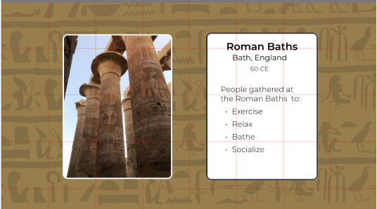

I received feedback from users about my Every Picture project to find ways to improve the usability.
I found that users connected with the prompts in the experience but were confused about how to interact with the images. They were also slightly startled by the changing backgrounds and felt that it was a sudden change.
I tested my prototype with two UC Davis undergrads. One is a 21 year old, female, NPB major and the other is a 20 year old, male, English and Psychology major. My target audience is people ages 19-22 who are looking for deeper meaning of life and human relationships.
I asked users to do what they felt was right. My project is just one page and if I had asked users to "interact" with the project it would have given the point of the test away. I stayed as removed from the tester experience as possible and only stepped in if they were confused about what to do.
Users quickly scrolled down the page and were in awe of the changing backgrounds. They did note that the change was a little overwhelming because they weren't expecting a drastic change in background. One of my testers instinctually hovered over the images while the other one didn't interact with the page until prompted to.
Users enjoyed the hover effect, but both asked about what each of the places were. They wanted to learn more about what the images were of. One of them also tried to click on the image and expected something to happen when they clicked.
There weren't any blazing usability problems or bugs. However, there are changes to be made. Firstly, a click interaction to show users information about the images included in the experience should be added. It would add more depth to the experience.
I would also, like to soften the transition between backgrounds because it makes users feel caught off guard. Lastly, there is room for more user guidance via text or micro-interactions.
